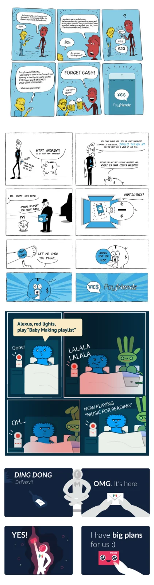
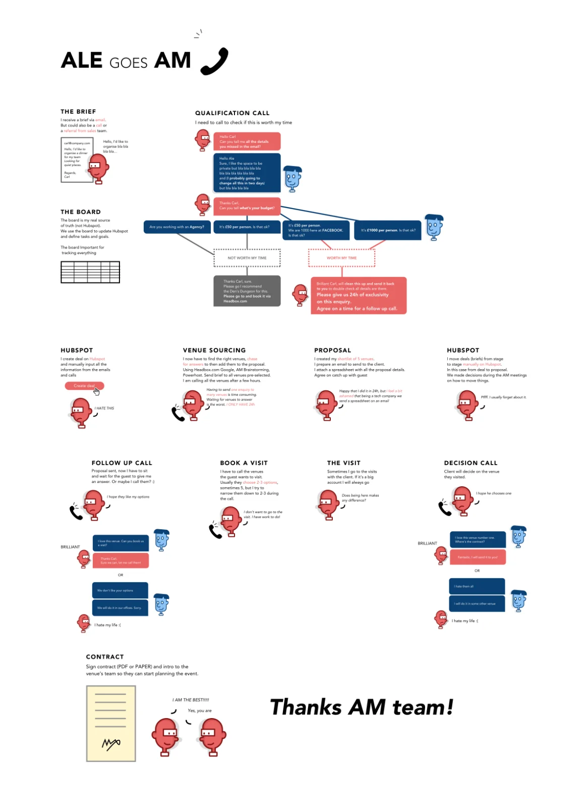

Creative archive
Illustration, identity, motion and interface craft from before the work became mostly systems and teams. Kept here because the habits it built, drawing the thing rather than describing it, animating a state to find out whether it reads, are still how I work.
User-journey demos
Yapily, 2020–2021Working screens rather than slides. Customers building their own open banking flows could click through a real journey, then copy the patterns into their product. All three still run.
- 2020 The first Yapily design system Brand, principles and the component library the demos were built from. The starting point for everything that followed. Open the design system
- GENERAL The demo hub AIS, payments, VRP and QR journeys, with the guides that went alongside them. Open the demo hub
- BUILT FOR ONE CUSTOMER The Apple demo A journey built specifically for Apple, covering wallet, desktop and mobile flows. Open the Apple demo
Brand and interface studies
self-directedUnbriefed exercises: take a product I found interesting, and see how far an identity, a campaign placement and a set of app states can be pushed in a weekend. Not client work, and never ran anywhere.
Payfriendz
interface and motionIllustration and marks
drawn over several yearsPortraits, posters and marks drawn for colleagues, friends and side projects. The same reduced vector language I was using for product illustration at the time, pushed to see how much likeness survives a small number of shapes.
Scientists
a personal seriesA set of scientist portraits built from a small, fixed vocabulary, a circle, a silhouette, one pattern, three colours. And printed on shirts to see whether the likeness survived at chest size.
Comics and storyboards
Drawing was often the fastest way to argue a point, a strip to explain a product idea, a storyboard to make a flow legible to people who don’t read wireframes.

